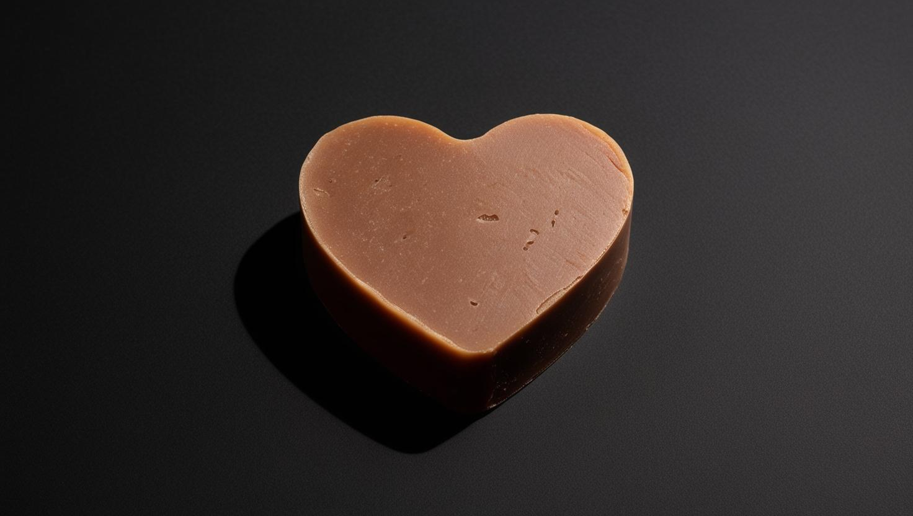
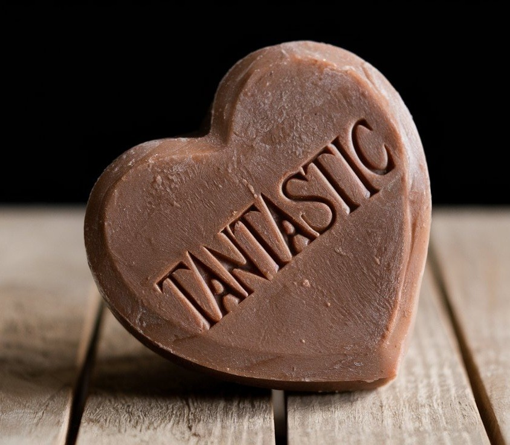

~*~
Brightens & Evens Skin Tone – Fades dark spots.

~*~
Deep Hydration – Locks in moisture for a soft and supple feel

~*~
Natural Glow Booster – Gives your skin a fresh.
~*~
Soothes & Repairs – Reduces redness, irritation, and inflammation

~*~
Remove pigmentation, and sun damage.

~*~
Deep cleans and give a luminous look.
Tantastic – The Power of Potato for Radiant Skin
What’s Inside? (Ingredients)
Our Tantastic Potato Soap is made with pure, skin-loving ingredients, carefully chosen to nourish your skin naturally:
🟡 Potato Extract – Rich in Vitamin C & antioxidants for skin brightening
🟡 Coconut Oil – Deeply hydrates and nourishes the skin
🟡 Shea Butter – Softens and protects against dryness
🟡 Olive Oil – Locks in moisture and soothes irritation
🟡 Aloe Vera – Calms and refreshes for a cooling effect
🟡 Essential Oils – Adds a natural, refreshing scent
🟡 Glycerin – Retains moisture for lasting hydration
No Harsh Chemicals!
✔ 100% Natural & Vegan
✔ Sulphate & Paraben-Free
✔ Cruelty-Free & Eco-Friendly
✔ Gentle on All Skin Types
About Tantastic
At Tantastic, we believe in simple, effective, and natural skincare. Inspired by the age-old beauty secrets of potatoes, we’ve created a one-of-a-kind skincare solution that’s both gentle and powerful.
Our mission is to bring out your natural glow with the pure goodness of nature—without unnecessary chemicals or artificial ingredients. Handcrafted with love, our potato soap is made in small batches to ensure premium quality and freshness.
Join the Tantastic glow movement and experience the magic of potatoes for healthy, beautiful skin!
Try Tantastic Today!
✨ Ready to Glow? Elevate your skincare routine with Tantastic Potato Soap. ✨